Tick management and Tick Borne Diseases (new)
{kind=link}
{kind=link}
{kind=link}
{kind=link}
Identification of Ticks and their Control
The occurrence of ticks in Africa is one of the major limiting factors to livestock productivity. Ticks not only sucks blood thereby generally weakening their hosts if they are many enough - they also act as major disease carriers between various species of animals. There are over 13 different tick families and more than 650 different kinds of ticks in Africa. All of them suck blood and when occurring in numbers can actually kill especially young livestock by sucking alone.
In this section we only mention the most economically important species of ticks - the ones that have been identified as major carriers of the diseases mentioned under tick borne diseases.
The diseases caused by ticks are highly devastating and lead to the use of very poisonous acaricides, to which ticks develop resistance especially when not applied appropriately, for examples in low doses, which allow the strongest and most resistant to survive.
Routine use of poisons and medicine is not acceptable in organic farming, and other ways of preventing the diseases should be sought and found. Nevertheless, in some situations and under certain circumstances it can be relevant to use acaricides. Even under organic farming conditions, we sometimes have to acknowledge the fact that we are confronted with highly deadly diseases that can take away the fundament for the livestock production on a farm or in an area. At the same time, it is also very important to be aware of following:
- The blanket use of acaricide can in fact worsen the situation because it creates susceptible animals, apart from the fact
- That there are residues in the products from this animal, and
- That the development of resistance can lead to useless acaricides in some years. Other ways and methods have to be developed. In this way, organic agriculture lead the way to search for efficient and more natural ways of managing ticks and the diseases they cause.
Understanding the epidemiology of ticks and tick borne diseases
Ticks carry deadly diseases, and they are therefore called 'vectors' for these diseases. Control of ticks and tick borne diseases requires a thorough understanding of their epidemiology and tick-host relationship. This understanding can help making a strategy to avoid these diseases. There are big differences between the different types of ticks and tick borne diseases, e.g. in how they are geographically spread, whether they are dose-dependent or not, and whether they only affect one animal species or more. Even though there are these differences, there are important similarities between the different parasites and the host-parasite relations, which are important to notice and which can help in finding ways of managing them, as will become apparent under the description of ticks:
- Hosts (=affected animals) can acquire immunity to the ticks as well as the diseases
- The hosts can survive without becoming ill even if it is attacked by tick that carry the diseases, because they are resistant to the diseases
- Hosts can act as carriers also if they are not sick themselves, but because they are resistant to a certain level of the diseases. This is called 'endemic stability' and is described below.
Families of Ticks:
1. Soft Ticks (Argas and Ornithodoros families
2. Hard Ticks (Rhipicephalus, Amblyomma, Hyalomma, Boophilus etc)
Soft ticks and their control
The soft ticks are a big problem for poultry and other small stock, but as far as literature has indicated do not seem to take a big part in transfer of diseases generally in livestock.
Soft ticks are usually fairly small (rarely above 5mm long). Their mouth parts are not easily seen as they sit on the underside of the tick, and their backs do not have the "Scutum" or hard back shield that the hard ticks have.
As mentioned soft ticks are mainly a problem in poultry and small stock, but they will feed on all the animals within their range. So also dogs and other domestic animals can help them spread.
The main damage of soft ticks is that they suck the blood of livestock - and when they are many the amount of blood sucked will cause animals to become anaemic, get tired and unproductive. For poultry and other small stock this can be a very serious problem, greatly affecting health and productivity of the animals.
Control measures
- As always - prevention is better than cure. Farmers have found that spreading ashes or diatomite in nesting sites and areas where the birds dust bathe, the soft tick problem can be somehow controlled or at least greatly reduced in number and thereby not affecting productivity to a noticeable degree.
- Also dry leaves of Lantana, eucalyptus, neem, pyrethrum and tephrosia added to the ashes and or diatomite in nests and dustbath areas will further reduce numbers of soft ticks.
- If the problems persist, please ask your vet about the best and least poisonous chemical dusting powder recommended for this problem.
| 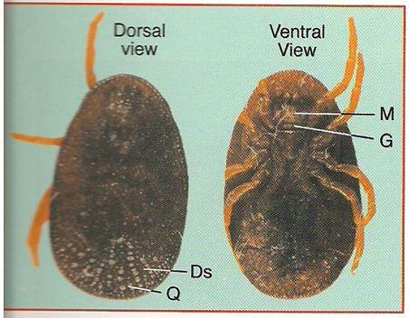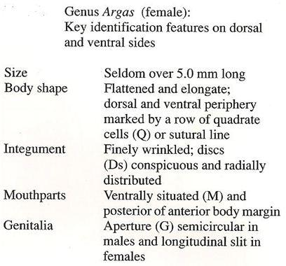 |
| Soft ticks (Genus Argas), picture from "Taxonomy of African Ticks" |
| (c) ICIPE Science Press
|
| 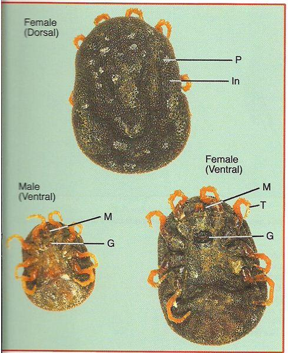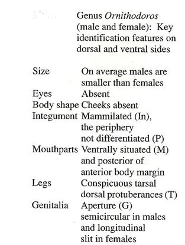 |
| Soft ticks (Genus Ornithodoros), picture from "Taxonomy of African Ticks" |
| (c) ICIPE Science Press
|
Hard ticks and their control
The main disease carriers are the following:
- The Blue tick, or cattle tick (Boophilus sp) This major family have many species each of which have different geographical distribution. The blue tick is instrumental in transferring both Anaplasmosis and Babesiosis which are both major diseases of cattle in East Africa (see below).
- The brown Ear tick (Rhipicephalus sp) is not always easy to distinguish from the blue tick, but whereas the blue tick can be found anywhere on the body, the brown ear tick prefers areas around the ears an under the tail. The brown ear tick is responsible for transferring East Coast Fever (ECF) in cattle and Nairobi Sheep disease. (see below)
- Amblyomma ticks transfer Heartwater disease (see below). These ticks have striped legs, sometimes a distinct ornamentation on the back shield and can often be seen boring right into the skin of the animals, thereby becoming very difficult to remove by hand. Often fairly large ticks - more than 5 mm long.
- Hyalomma ticks - often with striped legs, but no ornamentation on the back. It transfers Sweating sickness of calves/cattle (see below)
1. The Blue tick
| 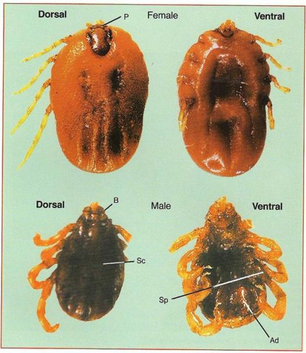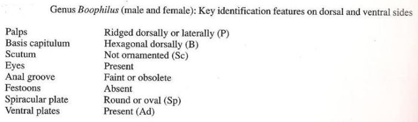 |
| The Blue tick, note position of grooves on the bloated tick. Picture from "Taxonomy of African Ticks" |
| (c) ICIPE Science Press
|
 Blue ticks (Boophilus sp) removed from a dog (c) A. Bruntse, Biovision
|
2. The Brown Ear tick | |
| 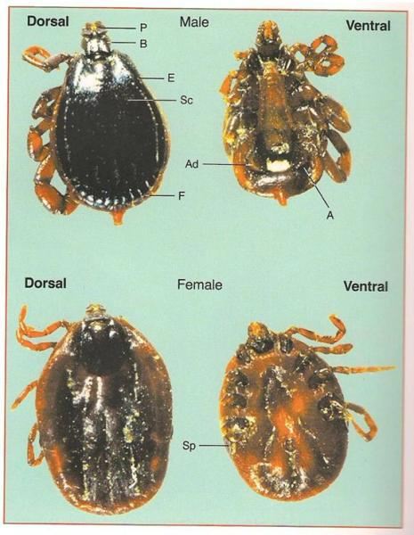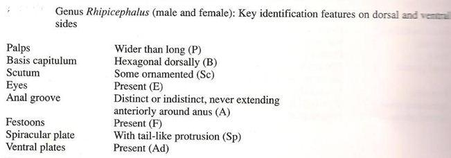 | |
| Brown Ear tick (note the slight difference in positioning of grooves on the bloated tick compared to the blue tick above). Picture from "Taxonomy of African Ticks" | |
| (c) ICIPE Science Press
|
 Ticks under the tail of a cow (c) A. Bruntse, Biovision
|
3. Amblyomma ticks
 Amblyomma ticks (note the distinct ornamentation on the back of the ticks as well as the striped legs, and the strong mouth parts used for burying into the host animals - usually fairly large ticks) (c) Courtesy of ICIPE Science Press, Taxonomy of African ticks
|
4. Hyalomma ticks
| 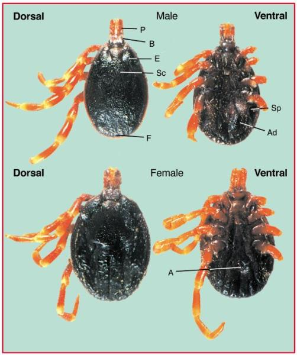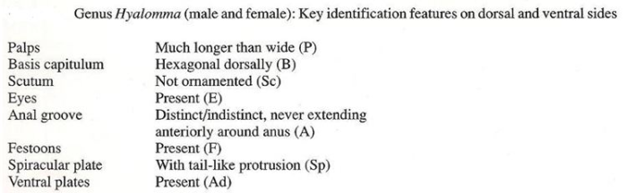 | |
| Hyalomma ticks ticks have somehow striped looking legs but have no ornamentation on the back. They also have very strong mouth parts used to dig into the host animal. | |
| (c) ICIPE Science Press
| |
Control measures for Hard Ticks
Control measures for Hard ticks in normal livestock herds in East Africa include the following:
- Breeding for tick resistance: Use primarily local breeds which are more resistant than exotic breeds, or cross breeds.
- Hand picking of ticks, which can be done weekly or even twice per week, if the problem is very big. Try as much as possible to remove the whole tick and not only the lower part of the body. This requires some training, and experienced people can do it by 'twisting' the whole tick and forcing it loosen its grip in the skin. Throw the ticks immediately on the fire. If you manage to remove the whole tick and just throw it on the ground or in the grass, it is still alive and can jump on the same animal or another animal again. See below for an explanation of endemic stability.
- Dusting with diatomite or in desparate cases with dusting powder recommended by the vet containing acaricides.
- Spraying with tephrosia leaves. Tephrosia has an effect like a 'natural acaricide' and can kill ticks. Pick leaves from tephrosia trees and put about 500 grams of them in a 20 L bucket, which you fill up with water. You can dilute that tincture with another bucket of water. Let them stay there for a couple of days and spray it over the animals, where the ticks are.
- Spraying with knapsack or similar device. In spraying a herbal agent such as Tephrosia or pyrethrum can be used or alternatively an approved acaricide. Equipment wise there are a range of sprayers available from knapsacksprayers, over foot pumps to hand operated lever pumps.
- Spray races are expensive to put up but very effective for treating large herds of animals. Spray races normally use acaricides for efficiency and labor saving.
- Dips. These are well known in East Africa as there used to be public dips in villages where farmers could take their animals for dipping at regular intervals. However this service seems to have mostly disappeared. Large scale farmers still construct dips for their herds as it is an efficient and labor saving way of controlling ticks.
- Spraying cattle before moving them to a new pasture
- Alternating pastures and crop land. If the land is kept free of cattle for a season there is a chance that some of the ticks waiting on that land will not survive.
Reducing the need for acaricides through smart organic management
Make the animals resist the tick-borne diseases through endemic stability
In a highly susceptible cattle population, the impact of tick borne diseases can be devastating, whereas in a population constantly exposed to ticks and tick borne diseases, endemic stability can develop and reduce the problem significantly. Endemic stability build on the fact that cattle can develop resistance towards the tick borne diseases if they are constantly exposed in very small doses. That exposure keeps alive the cattles' ability to fight the disease. Some cattle breeds - especially the local breeds - have a stronger ability to this than imported cattle breeds (so-called exotic breeds). Regular hand-picking of ticks, for example weekly or twice per week, will keep this endemic stability in a population of strong cattle with the ability to build up resistance.
Managing ticks and tick borne diseases from an organic livestock farming perspective
Routine use of acaracide treatments is unacceptable from an organic perspective. Strategies should be developed which focus on prevent the diseases and support the specific resistance of the animals to ticks and the tick borne diseases. These strategies can include:
- Preserve enzootic and endemic stability, or re-establish it through immunization against TBD, as described just above. A vaccine is now also available against ECF. Please consult you local vet for more information.
- Use the existing knowledge and educate all in the organic farming environments about the benefits gained and methods of boosting immunity to tick borne diseases, and achieving host resistance to ticks,
- Breed for increased resistance to ticks as well as to tick borne diseases,
- Develop grazing and husbandry strategies, see below for some examples.
- Use non-poisonous methods of controlling ticks in individual cases, and fitting to the situations - e.g. hand-picking of ticks and use of plant-based acaricides like tephrosia.
- Careful use of acaricides, which is a careful selection of situations where it is found relevant to use acaricides, in combination with a careful selection of the acaricide itself. This is described in details below. Even though acaricides are strong poisons, we have to face the fact that tick borne diseases and ticks are very dangerous diseases which cause great losses, and it can be necessary to use in some situations, as long as we have them available. Below, we have given a description of situations and a description of the different poisons (acaricides).
Breeding
Cattle differ widely in their resistance to ticks and tick borne diseases. Wherever possible, tick-resistant cattle should be promoted through selective breeding to increase the resistance of cattle in a herd. This will result in lighter tick infestations and reduce the requirement for acaricide treatments. Continuously selecting those animals for breeding that consistently carry the smallest number of ticks is a good and cheap strategy. Local cattle breeds are well-known for being more resistant to tick borne diseases than exotic breeds, which never had been exposed and therefore also not naturally selected for resistance.
Grass land management
Alternating between fields with crops and pasture with livestock reduces tick populations. Alternating between sheep and cattle does the same. It can be combined with treatment of cattle just before they enter a new paddock. Certain birds (oxpeckers, cattle egrets, chickens) also contribute to an overall reduction in tick numbers on livestock and on pastures, so that means that environments which favor those birds should be encouraged. Organically farmed land with no pesticide use and a good biodiversity has a good chance of doing that.
Hand picking of ticks
As explained above, hand picking of ticks can contribute to building up an endemic stability in an area, if all agree to do the same. In this way, the cattle population in a local area will all have a built up resistance and the situation is stable.
Use of natural acaricides
In some cases it can be an advantage to use natural acaricides like tephrosia , where 1/2 kg is soaking in a bucket of water for 48 hrs and then diluted to 2 buckets which can be sprayed on the attacked cattle, for example when there are a high number of ticks on some of the animals, and handpicking seems hopeless. On the other hand, picking leaves and preparing a solution for spraying also requires labor. One should be aware that plants can also be very poisonous, and nicotine / tabacco leaves, which were previously seen as one option for treating ticks and ectoparasites, are now discouraged by many for use in organic farming. Therefore, plant medicines and poisons should also be applied and handled with care. Always check the effect after a day or two and make sure that it has worked.
Careful use of acaricides
Many measures to avoid tick borne diseases include the use of an acaricide, which is a very poisonous chemical. There are various types of acaricides on the market and it can be difficult to know which one is best or even least poisonous to work with. Like with antibiotics, farmers also experience a lot of acaricide resistance. Below we explain about this problem and what it means to the selection of acaricides and situations to use it in on an organic farm.
Acaricide classes and resistance in ticks
| WARNING: Improperly manufactured and wrongly applied acaricides can kill livestock and people! NEVER use acaricides to spray on vegetables!!!! |
The resistance of ticks to acaricides results from repeated long-term exposure of ticks to one and the same chemical (acaricide) and survival and reproduction of those few ticks that are less affected by this acaricide. The longer one acaricide is used, the higher the chance of ticks becoming resistant. If an acaricide is used under-strength (= too diluted to be fully effective) more ticks can survive and resistance in ticks emerges much faster. Use acaricides with care and only in situations, where no other options are possible - remember that even though it feels like doing something secure, routine use of acaricides can actually worsen the situation and undermine the possibilities for handling the situation in cases of emergency.
Ticks resistant to organophosphate and synthetic pyrethroid acaricides are widespread. But in most countries amitraz resistant ticks are not common. Changing from one acaricide class to another is also called 'acaricide rotation'. It is helps to delay or reduce the emergence of acaricide resistance in ticks. - When you think that an acaricide is no longer working, it is good to first contact your local veterinarian and seek advice on how to react.
Different acaricides contain very different chemical substances that can kill ticks. According to the active ingredient that it contains, an acaricide belongs to a specific type or class. Acaricide of the same class all work in a very similar way. If ticks have become resistant against one acaricide in a particular class, they will also be resistant against other acaricides of the same class. This is very important when one considers changing from one acaricide, which is no longer efficient, to a different new one. Don't just change from one product to another. Different manufacturers use different product names and different products can contain exactly the same active ingredient.
When comparing different acaricides always look for and compare the chemical name. Also, compare whether two different acaricides belong to the same class.
Acaricides are very toxic. Even skin contact with an acaricide is dangerous and can cause severe disease.
An overview of acaricide classes and chemical names is given below:
| Name of Acaricide Class | Different acaricides all belonging to the same class |
|
Organophosphates | Diazinon Dichlorvos Chlorfenvinphos Coumaphos Ethion |
| Carbamates | Carbaryl Promacyl Propoxur |
| Chlorinated Hydrocarbons (also called Organochlorines) Old class, no longer used in many countries | Lindane Methoxychlor Toxaphen |
| Pyrethrins & Synthetic Pyrethroids | Cypermethrin Flumethrin Fenvalerate Permethrin Pyrethrin |
| Formamidines | Amitraz (only product in this class) Not for use in horses/donkeys |
| Macrocyclic Lactones | Doramectin Moxidectin Ivermectin |
Only buy and use registered acaricides and follow exactly the manufacturers' instructions on how to use them. Besides the brand name and instructions for use the acaricide package must show the name of the chemical substance contained in the acaricide, the withdrawal period for milk and meat, the address of the manufacturer, the expiry date of the product and a health warning.
The best suitable acaricide should be cheap, easily applied, with a strong effect on female ticks to prevent them from laying eggs and to protect cattle from reinfestation by tick larvae. In addition, it should also be non-toxic to livestock and humans and have no residues in meat and milk. - Unfortunately, such an acaricide has not yet been discovered.
'Chemical Control' is the correct application of an efficient acaricide and remains the most important tick control strategy in the foreseeable future. - For small scale farms the best acaricide application methods are knapsack-sprays or pour-ons. Medium and large farms can use dips or spray races.
Tick borne diseases: Anaplasmosis
Mode of spread
Anaplasmosis is not contagious. The source of infection is always the blood of an infected animal. Transmission does not take place by contact but generally via the medium such as the:
Blue tick: This is a one-host tick, spending its entire life on its host and for whose control once-weekly dipping or spraying is generally appropriate.
 Blue tick (Boophilus sp) (c) Dr. John W. McGarry, School of Vet Science in Liverpool
|
Biting flies, contaminated instruments such as injection needles, oxpecker birds can also transmit infecton.
Wild animals and other domestic animals can be infected and become reservoirs of infection
Clinical signs and diagnosis
Onset of illness is characterised by a:
- rising fever of up to 41 degrees Celsius (106 degrees Fahrenheit),
- drop in milk production, and
- decreased appetite. Severely affected animals lose condition rapidly and very severely affected animals may die within a few hours of the onset of symptoms.
- severely affected animals are depressed, lose their co-ordination and become breathless and lag behind the rest of the herd if exerted. If forced to walk some of these animals may even lie down. These symptoms are directly related to the degree of anaemia caused by the destruction of red blood cells.
- examination of the eyes and vulva will reveal a change from a healthy pink to a pale white to yellow, or even light orange colour. This indicates the onset of jaundice due to liver damage. The teats of a milking animal appear pale or white in colour.
- there is a rapid, pounding heart rate. This is easily heard by pressing one's ear against the animal's pelvis. This loud beat, heard several feet from the heart itself, is almost diagnostic for Anaplasmosis. It cannot be heard in a normal animal.
- the urine may be yellow or even brown, but, unlike Babesiosis (Redwater) contains no red blood cells.
- constipation is common.
- pregnant animals often abort.
- some animals are hyperexitable and aggressive, charging and attacking people.
- in the severe form of the disease, there may be death if immediate treatment is not given.
- in dead animals, blood is thin and watery and the flesh is pale yellow. The liver is yellowish orange. The gall bladder is large and full of brownish greenish fluid and the kidney is large and soft. The spleen is enlarged and mushy.
Diagnosis
Prevention and recommended treatments
Prevention and control
- Regular dipping and spraying with effective solutions to control tick infestations are vital preventive measures. In non-East Coast Fever areas, and in most extensive systems, young calves are often not dipped for the first few months. This allows them to contract the disease and confers immunity.
- Eradication is generally not practicable due to the ubiquity of the carrier ticks, the long period of infectivity in carrier animals, the presence of carriers in the wild animal population and the difficulty of identifying infected animals.
- Vaccines are available and used in some countries. These are either livng attenuated strains of A. Marginale coupled with treatment if required, or the less pathogenic A.Centrale. Severe reactions can occur with both types of vaccine.
Recommended treatment
- The drugs of choice for treatment are tetracyclines and Imizol (midocarb dipropionate)
- Oxytetracycline long-acting solution is effective given early in the disease at a rate of 30mg per kg i/m. Likewise imidocarb at 3mg/kg. These dosages will not elimiate the carrier state. For this repeated injections at a higher dose level are required, which may not be appropriate in Kenya at the present, due to the widespread abundance of the organism in recovered, immune animals.
- Constipated cattle should be given a dose of Epsom Salts - 500g (1lb) is a suitable dose for an adult animal. Also molasses drench is useful combined with plenty of drinking water. Careful nursing and provision of an appropriate diet with green feed will assist recovery. Avoid giving hay, dry straw and grains to constipated cattle.
Babesiosis (Redwater)
| 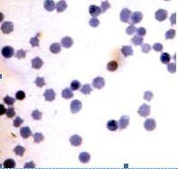 | 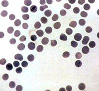 |
| B.Bovis | B.Bigemia |
| (c) USDA
| (c) USDA |
Mode of spread
- Calves have a degree of immunity (related both to colostral-derived antibodies and to age) that persists for about 6 months.
- Animals that recover from Babesia infections are generally immune for life.
- 8-16 days for B.bovis as transmission occurs early larval stages of ticks
- at least 9 days longer for B.bigemnia because infection is not transmitted until the nymph and adult stages of the tick begin to feed.
Signs of Babesiosis
- Blood in urine: The release of haemoglobin results in jaundice and blood in the urine. The urine is usually, but not always, red in colour. Sometimes the urine is dark red and sometimes it can be almost black. Such animals are very ill indeed and usually die.
- High temperature: There is a rise in temperature. This is often 41 degrees Celsius (106 degrees Fahrenheit) or higher.
- Affected animals become depressed, listless, rumination ceases, milk yield drops, and they refuse to eat.
- Pregnant animals often abort
- Pale eyes and gums: The eyes and gums are pale from anaemia and jaundiced (yellowish), due to bile pigments in the blood stream.
- In severe cases, brain capillaries become blocked with infected red blood cells causing cererbal babesiosis resulting in incoordination followed by posterior paralysis,or by mania,convulsions and coma. Such animals rarely recover, despite treatment.
- In less severe cases of the disease, infected cattle have fever lasting about 1 week and remain sick for 3 weeks. This group of animals may recover slowly while pregnant animals may abort. Recovered animals remain permanent carriers of the disease. Zebu cattle appear to have more resistance to babesiosis than do European breeds.
- Post mortem fndings reveal an enlarged spleen, a swollen liver, with an enlarged gall bladder containing dark green granular bile, congested dark-coloured kidneys, and generalised anaemia and jaundice. The urine is usually, but not always, red in color.
Diagnosis
- Leptospirosis. This disease also presents with red urine, jaundice, abortion, depression and loss of appetite. However there are no blood cells in the urine, it affects all ages, including young calves and the degree of jaundice is often more profound due to the more chronic nature of the disease. Sensitivity to light of white skin is common. Leptospirosis often occurs during periods of heavy rain as rodents frequently are carriers, passing the infection in their urine, which can then survive for extended periods of time in pools of water.
- Heartwater may also initially be confused with cerebral babesiosis but there are clinical differences and no babesia parasites will be found in stained smears.
- Anaplasmosis is a less severe disease with no blood cells in the urine.
Prevention - Control - Treatment
Prevention and Control
Recommended treatment
- Diminazene aceturate (Norotryp, Berenil etc) and
- Imidocarb dipropionate ( Imizol).
Dimiazene is given at a dose rate of 2 to 5 mg/kg by intramuscular injection.
Bovine Petechial Fever
Introduction
Mode of spread
Signs of Bovine Petechial Fever
- Sudden high fever
- Abrupt drop of milk yield
- Numerous petechiae (small red spots caused by bleeding from broken capillary blood vessels) on the mucous membranes of the eye, the inside of the vulva, and the lower surface of the tongue
- Fluid accumulation in the lungs (Pulmonary oedema)
- Death within 3 days.
- A fluctuating fever
- Drop in milk yield
- Dullness in affected animals
- Pregnant cows abort, most likely due to the high fever.
- 24 - 72 hours after the onset of fever petechiae are seen, which fade within hours to be replaced by fresh petechiae, the cycles continuing for 7 -10 days.
- Often the nasal discharges are blood-stained and the dung is black, tarry and blood-stained.
- Sometimes one eye protrudes, the conjunctivae (the mucous membrane that lines the inner surface of the eyelid and the exposed surface of the eyeball) are swollen, the eyelids are turned outward, the eyeball is tense and the aqueous humor (the clear, watery fluid that fills the chamber of the eye between the cornea and the lens) is displaced by blood. This is the so-called poached egg eye.
- Up to 50% of affected animals will die.
Diagnosis
Prevention - Control - Treatment
Prevention and control
- Separate cattle from areas frequented by bushbuck and reedbuck
- Keep cattle away from forest edges
- Isolate any animal showing sudden fever with a drop in milk yield
- Examination of blood smears by a qualified veterinarian
In recent years, incidences of Bovine Petechial Fever have declined because extensive development of farmland has cleared and eliminated bushbuck and reedbuck habitat.
Treatment
East Coast Fever Complex (Theileria parva parva, Theileria parva lawrencii)
Gikuyu: ngai / Kamba: ngai / Embu: ngai / Gabbra: shilmi dimtu / Maasai: oltikana, oldigana / Kipsigis: sosoito / Swahili: ndigana / Turkana: lokit, loleeo, lipis / Iteso: angaarwei / Luidakho: yapwolo / Luvugusu: gamavumba / Nandi: cheptigonit / Pokot: cheptikon, lipis / Maragoli: ivitu, evivitu / Meru: ita / Samburu: lipis / Borana: lipis / Somalia: udhurshillin kener
Theileriosis, African coast fever, la fievre de la cote orientale (French), fiebre de la costa oriental Africana (Spanish)
Tick borne protozoal parasite disease
Introduction
Mode of spread
Signs of East Coast Fever
- The parotid lymph nodes below the ear become enlarged 14 to 16 days after attachment of the tick.
- A few days later a fever develops. This can be up to 41 degrees Celsius to 42 degrees Celsius (106 degrees Fahrenheit to 107 degrees Fahrenheit).
- Milk yield decreases
- Other superficial lymph nodes enlarge, especially those in front of the shoulder joint and in front of the stifle joint of the hind leg. These are often clearly visible to the attentive observer.
- Appetite decreases, body condition declines, parasaties appear in the blood and the animal is infective to ticks and hence to other animals
- There is fluid in the lungs and pneumonia occurs. The animal breathes increasingly rapidly and with increasing distress. It starts to cough, especially if made to move and nasal discharge is common.
- The eyes often appear milky or blue and there may be shedding of tears.
- Sometimes there is diarrhoea which can be violent or blood stained.
- There is muscle wasting and posterior weakness
- Finally the animal collapses and dies, usually about 18 to 26 days after tick attachment.
![]() | ![]() |
| Swollen Lymph node as sign of ECF carried by the brown ear tick shown below | Brown ear ticks on the ear of a calf |
| (c) The University of Edinburg | (c) The University of Edinburg
|
Diagnosis
Diseases with similar symptoms
Prevention - Treatment - Control
- The infection and treatment method of immunisation against East Coast Fever is gaining ground. The antibiotic used is a long acting (LA) Oxytetracycline, which inhibits development of the parasite when given at the onset of infection. The animal is injected with live vaccines of East Coast Fever. This will confer protection to this strain for more than 3 years. However there are different strains of East Coast Fever and when immunised cattle are moved to a different area they may not be protected. Likewise if infected cattle from another area move in to a property they may bring in with them other strains of East Coast Fever.
- Effective Tick control. Tick control continues to be the most important measure in the fight to prevent cattle from becoming infected with East Coast Fever. The Brown Ear Tick is a three host tick i.e. it does not spend its entire life on the animal but drops off between the various stages of its life cycle; therefore when an outbreak occurs, either on the property or in the immediate area, once weekly dipping or spraying will not be sufficient. Dipping or spraying must be done twice weekly to break the transmission cycle between cattle and tick and continued as long as is necessary, for example if the tick problem continues to be unacceptably high. Pyrethrum grease should be applied to the inside of the ears and below the base of the tail, whose end should be clipped. All of this is costly, but not as costly as losing valuable stock or having to use very expensive curative drugs.
- Newer tick control measures include the Spot-on / Pour-on drugs
Treatment
Heartwater
Samburu: ilmilo, sirgo / Rendile: sirgo / Borana: sirgo / Turkana: eidid, amili / Gabra:sirgo, qanno ree / Somali: gidhir, madhahta / Pokot: chemlei, chepripremot
Mode of spread
Signs of Heartwater
Clinical Findings
- There is a sudden onset of fever, which remains high until shortly before death.
- In peracute cases, animals develop fever, excessive watering from the eyes, and convulsions.
- In the acute form, there is loss of appetite, fever, and signs of central nervous system disturbance.
- Affected animals chew constantly, lick their lips, and flick their eyelids while circling with a high-stepping gait, or standing with legs straddled and head lowered.
- Nervous signs worsen, until the stricken animals subside into sternal recumbency and then into lateral recumbency and die during a galloping convulsion.
- Diarrhoea is sometimes seen.
| 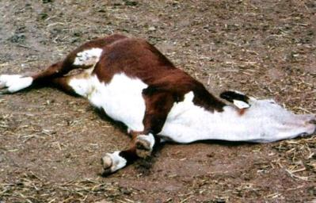 |
| Heartwater: Lateral recumbancy with extended legs |
| (c) USDA
|
Diagnosis
- Movement of susceptible animals into a known Amblyomma infested area
- Clinical signs and
- Post mortem findings
- The organism targets and damages the walls of the blood vessels
- Increased vascular permeability results in fluid effusion into tissues and body cavities resulting in a fall in arterial pressure and general circulatory failure.
- In peracute and acute cases there is oedema of the lungs and brain, collection of fluid in the chest cavity, within the pericardial sac (hence the name Heartwater) and in the abdominal cavity.
- There is enlargement of the spleen, engorgement of the liver and occasionally haemorrhagic gastro-enteritis.
Diseases with similar symptoms
- Cases in which there is sudden death must be differentiated from Anthrax and acute ECF, Plant poisoning and acute Redwater (Babesiosis).
- Nervous cases should be differentiated from tetanus, Rabies, Cerebral Anaplasmosis, Cerebral ECF and Strychnine poisoning used in baiting of dogs.
Prevention - Control - Treatment
Prevention and control
- Dipping or spraying with acaricides at weekly intervals will reduce the incidence of the disease.
- Preventing the introduction of Amblyomma infested stock or fodder into clean areas. The excessive reduction of tick numbers, however, interferes with the maintenance of adequate immunity through regular field challenge in endemic areas and may result in heavy losses.
- There is as yet no widely effective and safe vaccine against Heartwater. However, an "infection and treatment" method with infected sheep blood or a suspension of infected nymphal ticks is used. This is injected iv (intravenous) and severe post-immunisation reactions are controlled by the administration of tetracyclines at the onset of fever, and then every 12 hours until the fever decreases.
Treatment
- Oxytetracycline at 10mg/kg or doxycycline at 2 mg/kg are usually effective.
- In sheep, goats and susceptible cattle breeds, a higher dose (10-20 mg/kg) of oxytetracycline may be required, especially if treatment begins late during the feverish reaction or after other clinical signs appear. In such cases the first treatment should be given intra veinously.
- A second and third treatment may be required before the fever abates, or a second injection intra muscularly with a long-acting oxytetracycline formulation may be given.
- In animals showing nervous signs diuretics and non-steroidal anti-inflammatory drugs are indicated.
Nairobi Sheep Disease
The incubation period is about 4-5 days, followed by a fever lasting for 1-3 days. Illness is manifested by depression, lack of appetite, a slimy pus like, blood-stained discharge from the nose and a foul smelling dysentery causing painful straining. Pregnant animals frequently abort. Some animals may die within 3 days. In others the disease is prolonged for 5-9 days.
Clinical signs in animals reared in areas infested with infected ticks are usually not observed. In contrast the clinical response in susceptible sheep is per-acute, and mortality may reach 90%. The reactions in young lambs and kids are not as severe as in adults.
A natural attack gives survivors a life-long immunity with the production of antibodies.
Diagnosis
- A severe bloody diarrhea and enlargement of all lymph nodes.
- In addition small haemorrhages (bruises) often stud the outside and inside of the heart.
- Skin haemorrhages have been seen in the fetuses of pregnant ewes which die.
- Haemorrhages have also been seen in several other organs, such as the caecum, colon, gallbladder and kidney.
- Conjunctivitis (eye infections) and dried crusts around the nostrils are also often seen.
Similar diseases (diseases with similar signs)
- Peste des Petit Ruminants,
- Rift Valley Fever, Heartwater,
- Salmonellosis,
- Parasitic Gastro-enteritis and
- Coccidiosis.
Prevention - Control - Treatment
Treatment and Control
Unaffected animals in a flock may be treated with acaricides to try to lessen infection by infected ticks.
Attenuated and inactivated vaccines are available, inactivated vaccines being the more effective
Sweating Sickness
Mode of spread
The toxin develops in the tick, not in the calf. The potential to produce toxin is retained by ticks for up to 20 generations. The disease cannot be transmitted from an infected animal to a susceptible animal by contact or by inoculation of blood.
Signs of Sweating Sickness
Clinical Signs
- Initial symptoms are fever, salivation, and reddening of the skin and visible mucous membranes.
- There is loss of appetite, watering of the eyes and nose, salivation, and tenderness of the skin.
- The skin feels hot and sometimes the eyelids stick together.
- A few days after the onset of fever a moist eczema appears. Sometimes this is generalised but more often it is localised to patches on the head, the neck, flank, axilla or groin.
- The hair is matted and sticks together with beads of watery fluid on the hair tips. Tufts of hair with skin attached can easily be pulled from these areas, exposing raw, red wounds.
- The skin is extremely sensitive and painful and has an unpleasant smell. The tips of the ears and the tail may slough.
- The coronets of the hooves sometimes become congested and very painful.
- The animal is distressed by bright sunlight and seeks shade. It resents being handled.
- It may have diarrhoea, nasal and oral erosions and a frothy nasal discharge. At this stage death may occur. If the animal does not die then the skin may become hard and cracked and predisposed to secondary infection or to fly maggot infestation.
Death in affected calves ranges from 30-70% and 100% of calves in areas where the disease is prevalent may be affected. This all depends on the numbers of ticks, the length of time they are on the host and the immune status of the herd.
Diagnosis
Prevention - Control - Treatment
Prevention and control
Treatment
There is no specific treatment, as this is not an infection.
The best course is to remove the ticks, treat symptoms by good nursing, provide appetising foods, and administer antibiotics and sulphonamides to suppress secondary infections of the skin, respiratory and alimentary tracts.
Review Process
- William Ayako, KARI Naivasha. Aug - Dec 2009
- Hugh Cran , Practicing Veterinarian Nakuru. March - Oct 2010
- Review workshop team. Nov 2 - 5, 2010
- Addition of Nairobi Sheep Disease Oct 2011 by Dr Hugh Cran
- Addition of Ticks Identification Chapter by A. Bruntse, Oct 2013
- Addition of information by Dr Mario Younan, VSF-G, October 2013
- Edited by Mette Vaarst, OrgAnimProve November 2013
- For Infonet: Anne, Dr Hugh Cran
- For KARI: Dr Mario Younan KARI/KASAL, William Ayako - Animal scientist, KARI Naivasha
- For DVS: Dr Josphat Muema - Dvo Isiolo, Dr Charity Nguyo - Kabete Extension Division, Mr Patrick Muthui - Senior Livestock Health Assistant Isiolo, Ms Emmah Njeri Njoroge - Senior Livestock Health Assistant Machakos
- Pastoralists: Dr Ezra Saitoti Kotonto - Private practitioner, Abdi Gollo H.O.D. Segera Ranch
- Farmers: Benson Chege Kuria and Francis Maina Gilgil and John Mutisya Machakos
- Language and format: Carol Gachiengo
Information Source Links
- Barber, J., Wood, D.J. (1976) Livestock management for East Africa: Edwar Arnold (Publishers) Ltd 25 Hill Street London WIX 8LL
- Blood, D.C., Radostits, O.M. and Henderson, J.A. (1983) Veterinary Medicine - A textbook of the Diseases of Cattle, Sheep, Goats and Horses. Sixth Edition - Bailliere Tindall London. ISBN: 0702012866
- Blowey, R.W. (1986). A Veterinary book for dairy farmers: Farming press limited Wharfedale road, Ipswich, Suffolk IPI 4LG
- Brightwell R, Kamanga J and Dransfield R (1998). Key Livestock Diseases of Dryland Kenya. Kenya Economic Pastoralist Development Association (KEPDA), P.O. Box 30776, Nairobi Kenya.
- Force, B. (1999). Where there is no Vet. CTA, Wageningen, The Netherlands. ISBN 978-0333-58899-4.
- Hall, H.T.B. (1985). Diseases and parasites of Livestock in the tropics. Second Edition. Longman
- Hunter, A. (1996). Animal health: General principles. Volume 1 (Tropical Agriculturalist) - Macmillan Education Press. ISBN: 0333612027
- Hunter, A. (1996). Animal health: Specific Diseases. Volume 2 (Tropical Agriculturalist) - Macmillan Education Press. ISBN:0-333-57360-9
- ITDG and IIRR (1996). Ethnoveterinary medicine in Kenya: A field manual of traditional animal health care practices. Intermediate Technology Development Group and International Institute of Rural Reconstruction, Nairobi, Kenya. ISBN 9966-9606-2-7.
- Merck Veterinary Manual 9th Edition
- Okello-Onen, J, Hassan S.M, Essuman S: Taxonomy of African Ticks, Reprint Jan 2006, ICIPE Science Press ISBN No: 92 9064 127 4
- Organic Farmer magazine No. 50 July 2009
- Pagot, J. (1992). Animal Production in the Tropics and Subtropics. MacMillan Education Limited London
- Sewell and Brocklesby. Handbook of Animal Diseases in the Tropics 4th Edition
- The Organic Farmer magazine No. 51 August 2009